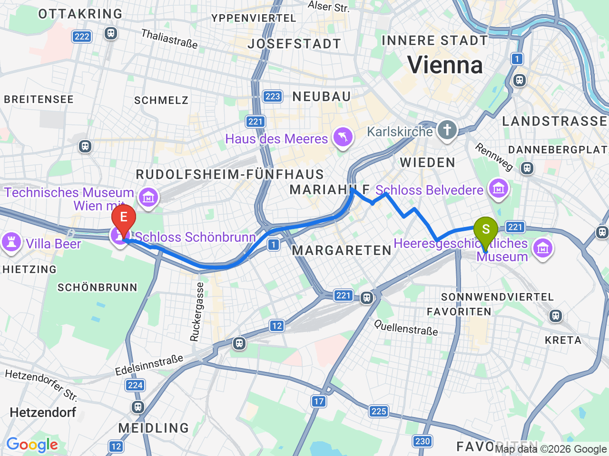
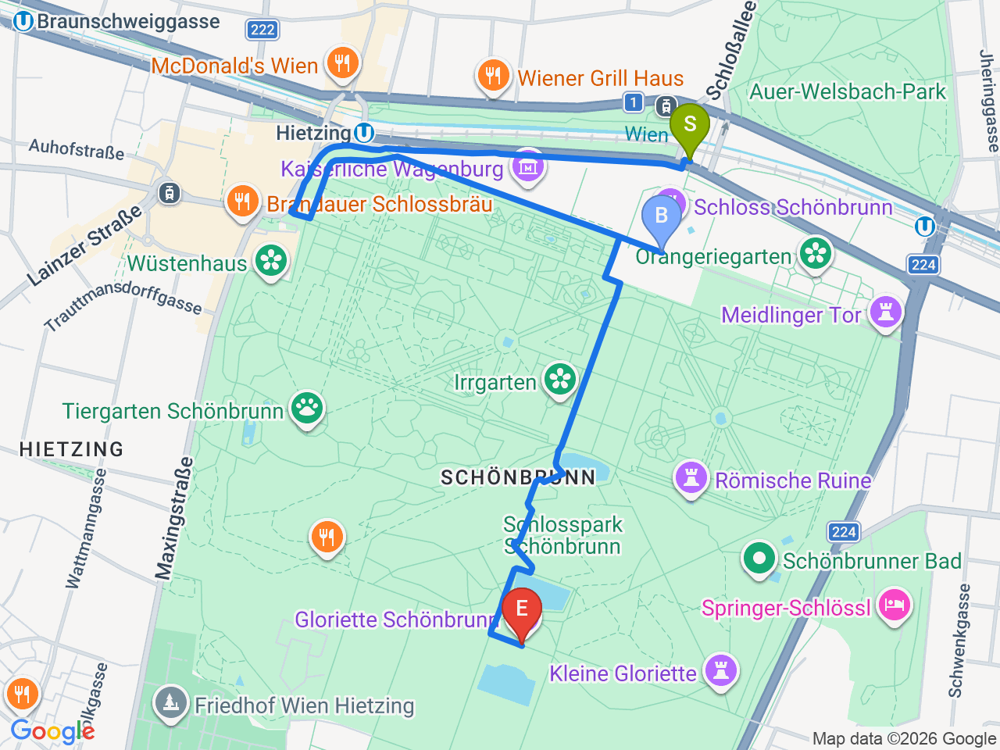

Day 34 · 2026-09-18（五）
奧地利・薩爾茲堡/德國國王湖/維也納 Day 7/10
熊布朗宮（美泉宮）全日：皇室內裝、花園與凱旋門觀景台
哈布斯堡皇室夏宮，導覽內裝＋花園散步＋爬上凱旋門看整座維也納，傍晚回舊城喝咖啡
⏰美泉宮旺季人潮多，內裝導覽（Imperial/Grand Tour）建議提前上官網 schoenbrunn.at 買時段票，現場排隊常要等；凱旋門(Gloriette)頂樓觀景台開放到11/2，之後會提前休館，出發前可留意
飯店→熊布朗宮

熊布朗宮園區（皇宮→花園→凱旋門）

固定時間行程DAY 34
| 時間 | 地點 | 地點 (英文) | 交通方式／班次 | 價格 | 預計停留(分鐘) | 備註 |
|---|---|---|---|---|---|---|
| 09:00 | 飯店出發，搭地鐵前往熊布朗宮 | U-Bahn U4，約20分鐘 | Schönbrunn 站下車即達 | |||
| 09:30 | 熊布朗宮內裝導覽 | 1Schönbrunn Palace, Vienna | 自行入場，語音導覽 | Grand Tour約€34／Imperial Tour約€27 | 60 | 建議提前上官網買時段票 |
| 11:00 | 花園散步＋迷宮 | 2Schönbrunn Palace Garden, Vienna | 步行 | 花園免費，迷宮約€6 | 60 | |
| 12:15 | 午餐 | 見上方三餐資訊 | 60 | |||
| 13:30 | 爬凱旋門（Gloriette）觀景台 | 3Schönbrunn Palace Maze, Vienna | 步行上坡約15分鐘 | 頂樓觀景台約€5 | 45 | 從這裡俯瞰整個熊布朗宮園區＋維也納市區，是全園最佳視角 |
| 15:00 | 搭地鐵返回市區 | U-Bahn U4，約20分鐘 |
彈性探索景點DAY 34
| 地點 | 地點 (英文) | 預計停留(分鐘) | 價格 | 備註 |
|---|---|---|---|---|
| INTERSPAR am Schottentor | AINTERSPAR am Schottentor, Vienna | 約20分鐘 | 依購買品項 | 大型超市，補給水果/飲料/隔天早餐點心都方便 |
| 晚餐：DECENTRAL | BDECENTRAL, Freyung 3/1, Vienna | 約60-90分鐘 | 見上方三餐資訊 | Café Central整修期間的臨時替代店，同團隊經營，Palais Harrach裡的挑高空間；備案見上方三餐資訊（Schnitzelwirt） |
每日三餐
早餐
飯店早餐ibis Wien Hauptbahnhof
午餐
熊布朗宮園區內咖啡廳（自由選擇）Schönbrunn Palace café約 €10-18／人
📍 Schönbrunn Palace, Vienna宮殿旁的 Residenz café/Gloriette café 都可以簡單解決，省下往返市區的時間；備案：Naschmarkt 也不遠，喜歡熱鬧市場氣氛可以選這裡
晚餐
DECENTRAL（Café Central 整修期間限定替代店）DECENTRAL約 €15-30／人
📍 Freyung 3/1, ViennaCafé Central 從2026/3/16起整修至「秋天」，9/18當天很可能還沒重開，同團隊在 Palais Harrach 開的臨時店 DECENTRAL 保留同樣的咖啡館質感，開放時間為週二至週六07:30-21:30（週日、一公休）；備案：附近 INTERSPAR am Schottentor 買點東西回飯店輕鬆吃也行／Schnitzelwirt（Neubaugasse 52，在熊布朗宮跟市區中間，在地人常去的平價炸豬排店，只收現金，週二至週六10:45-21:30，週日一公休，用餐時段常客滿建議先訂位或提早到）
住宿資訊